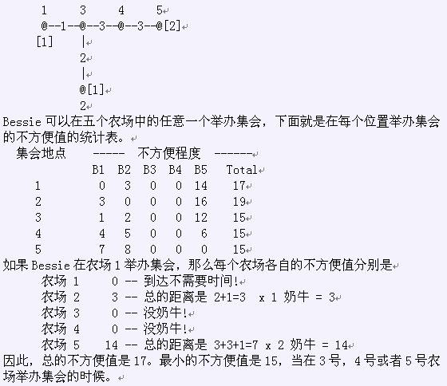

Bessie正在计划一年一度的奶牛大集会，来自全国各地的奶牛将来参加这一次集会。当然，她会选择最方便的地点来举办这次集会。每个奶牛居住在 N(1<=N<=100,000) 个农场中的一个，这些农场由N-1条道路连接，并且从任意一个农场都能够到达另外一个农场。道路i连接农场A_i和B_i(1 <= A_i <=N; 1 <= B_i <= N),长度为L_i(1 <= L_i <= 1,000)。集会可以在N个农场中的任意一个举行。另外，每个牛棚中居住者C_i(0 <= C_i <= 1,000)只奶牛。在选择集会的地点的时候，Bessie希望最大化方便的程度(也就是最小化不方便程度)。比如选择第X个农场作为集会地点，它的不方便程度是其它牛棚中每只奶牛去参加集会所走的路程之和，(比如，农场i到达农场X的距离是20，那么总路程就是C_i*20)。帮助Bessie找出最方便的地点来举行大集会。
考虑一个由五个农场组成的国家，分别由长度各异的道路连接起来。在所有农场中，3号和4号没有奶牛居住。
